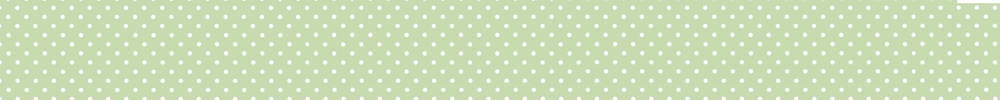

Amia Nguyen | Summer 2026 | GDES 308:Web Design
Hello World! Take a break and scroll through the wonderful worlds I have created! :p
I really enjoyed reading this one, especially with the cute birds providing small comments and the analogies of buildings, gardens, puddles, etc. It inspired me to think of my passion project website as more than just a simple assignment, but a new beginning for my HTML journey. As I worked more and more on it, adding silly elements scattered across the page, I became more enthusiastic about building on the website and keeping it growing.
I very much agree with what Le Guin is saying in this text; not only does technology cover a very wide scope of human-made products and inventions, but it is unavoidable in any science fiction work. I feel like today, many people associate the word technology with electricity-powered machines like televisions, phones, cars, etc. But it is much more than that; anything not naturally occurring in the world was created using some form of technology, like stone tools or clothing sewn by hand with the help of a needle and thread. To divide science fiction into two categories, "hard" SF and "soft" SF, is a little inaccurate, given the terminology they use to classify them.
The term "handmade web" is used to describe online digital websites that were coded by hand and meant to connect/associate the online space with physical media. Now, there is a somewhat rich history of old websites with dated layouts and less than functional features, much like an old historical piece. The medium is ever-growing and evolving, and soon many modern users will no longer be able to access old web media without the assistance of other sites like the "Wayback Machine". I love being able to create my own spaces online with websites. I found it as a way to express myself and show off my individuality with a custom site. The freedom I get with handmade coding allowed me to think creatively and showcase my skills and interests. This is what I feel is very common for most people, and it's beautiful seeing all the different personalities in their own personal world. I do believe that after being introduced to so many forms of modern media and art, I can say I am a little biased towards the digital world. With digital art, videos, sounds, websites, and many more, it's quickly become my favorite pastime. However, this isn't saying the digital and physical world can't live together and interact with each other; I enjoy both very much, and I'm glad to be able to experience both each in their own unique ways.
A user-hostile website can contain data-tracking, invasive AI, support labyrinths, net-neutrality, data-harvesting/selling, hackers, hyperpersonalization, and overall predatory manipulation. I have experienced these commonly on almost every site I've been on. I'm often seen as a consumer or customer in the corporate world, with my only purpose being to buy a service, subscribe to a company, purchase a product, or serve as a test guinea pig with my data. There's no really escaping it, and many alternatives sadly are just not as good. I try my best to avoid falling into data traps or signing up for anything without thinking, but I will inevitably be targeted if I want to remain online. I'm a little embarrassed to say I'm a victim of short-form content, specifically TikTok and YouTube Shorts. There have been times when I have been lying in my bed for hours, just scrolling endlessly between the two. I would scroll maybe one hour on TikTok, get bored and ashamed of myself for not being productive, and then switch off the app to YouTube, and repeat the cycle. It's a dangerously addictive thing, and it's becoming increasingly more prevalent in today's society. I feel like no one goes out anymore, and no one can do anything without their phone, whether they like it or not. And the worst part about this is that companies know, and they do their best to make their apps, sites, products, etc., much more addictive. Long-form content and analog forms of entertainment are going away, taken over by these reels and high-dopamine gambling philosophies.